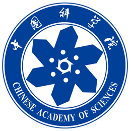

Welcome to my homepage! 😄
Haoqin Hong will complete his undergraduate studies in 2025 at the Hanhong Honors College, Yuan Longping Class at Southwest University, earning a Bachelor of Engineering in Computer Science and Technology under the supervision of Prof. Hu Xiaofang. Starting in September 2025,
he will pursue an academic master's degree in Intelligent Science and Technology - Artificial Intelligence at the School of Artificial Intelligence and Data Science at the University of Science and Technology of China,
supervised by Prof. Jingrun Chen, a China Distinguished Young Scholars, and he will also collaborate with Postdoc. Congcong Zhu on Computer Vision.
Haoqin Hong's research will focus on physics-inspired 3D dynamic reconstruction methods and embodied intelligent world models.
Haoqin Hong is proficient in programming languages such as C/C++, Python, and R. He is familiar with development tools and platforms like PyTorch, MATLAB/Simulink, ROS and Blender. He also has a good understanding of the basic architecture and cutting-edge research trends in algorithms such as Transformer, Diffusion, LoRA, NeRF, and 3DGS.
If you're interested in exchanging ideas or collaborating, feel free to contact him.
Github
Haoqin Hong's Github
Email
HaoqinHong@outlook.com honghaoqin@email.swu.edu.cn
Google Scholar
Haoqin Hong's Google Scholar
Address
Tianchen Road, High-tech West District, Chengdu, Sichuan Province, China, 611731
Address Tianchen Road, High-tech West District, Chengdu, Sichuan Province, China, 611731
Education Experience
September 2025-July 2028 | Hefei, China
School of Artificial Intelligence and Data Science
M.Phil in Intelligence Science and Technology

September 2021-July 2025 | Chongqing, China
Yuan-Longping Class, Hanhong Honors College
B.Eng in Computer Science and Technology

September 2022-January 2023 | Los Angeles, USA
Visiting Student in Data Science
Course and Transcript during the Exchange Period
Research and Internship Experience
Suzhou Institute for Advanced Research, USTC
March 2024-Present | Suzhou, China
Role: Graduate Research Assistant (Advisor: Prof. Jingrun Chen)
Chongqing Key Laboratory, Southwest University
March 2022-June 2025 | Chongqing, China
Role: Undergraduate Research Assistant (Advisor: Prof. Xiaofang Hu)

March 2023-July 2024 | Beijing, China
Role: Leader of Innovation Training Program (Advisor: Prof. A-Li Luo)
Recent Work
News
- 2024.9.29 I have been admitted to the USTC to pursue a M.Phil in Intelligent Science and Technology.
- 2024.7.4 I present at the World Congress on Computational Intelligence held in Yokohama, Japan.
- 2024.3.19 My paper was accepted by IEEE IJCNN 2024.
- 2023.6.30 I have been admitted to the China Academy of Sciences College Student Innovation Practice Training Program, and my advisor is Prof. Luo Ali, a researcher at the National Astronomical Observatory.
Publications
Articles
- IJCNN 2024 Oral, CCF-CHaoqin Hong, Yue Zhou*, Xiangyu Shu, Xiaofang Hu. "CCSPNet-Joint: Efficient Joint Training Method for Traffic Sign Detection Under Extreme Conditions." Proceedings of the 2024 IEEE International Joint Conference on Neural Networks.
Chinese Invention Patent
- Speech Recognition System and Method Based on Lightweight Transformer Network.
- Text Sentiment Detection System and Method Based on Memristor.
Selected Awards
Honors and Awards
- Outstanding Individual in Enhancing Innovation Ability of College Students in Chongqing.
- Southwest University First Class Scholarship, Second Class Scholarship, Third Class Scholarship.
- Special First Class Scholarship for Overseas Study or Internship of Han Hong College.
- Southwest University Innovation and Entrepreneurship Award.
- Southwest University Academic Science and Technology Award.
Competition Awards
- 🥉 Bronze Medal in Kaggle Research Competition: Google - Fast or Slow? Predict AI Model Runtime.
- 🏅 National First Prize in the DJI RoboMaster of the National University Student Robot Competition.
- 🏅 National First Prize in the China Robotics and Artificial Intelligence Competition.
- 🥈 National Second Prize in the China/Contemporary Undergraduate Mathematical Contest in Modeling.
- 🥉 National Third Prize in the “Challenge Cup” Specialized Competition - Huawei Track.
- 🥉 National Third Prize in the Chinese Collegiate Computing Contest.
- 🏅 Provincial First Prize in the National Undergraduate Electronics Design Contest.
Representative Work Showcase